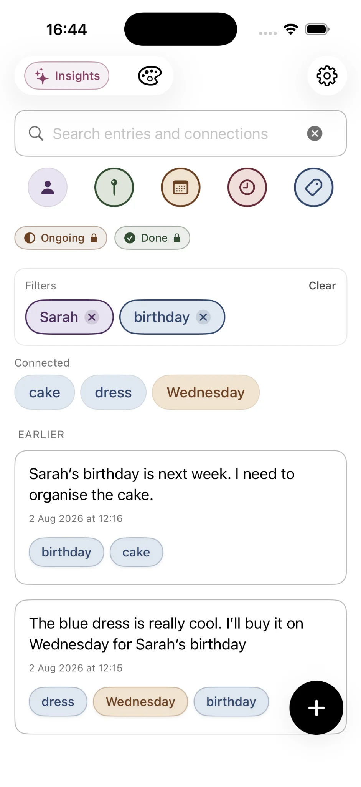
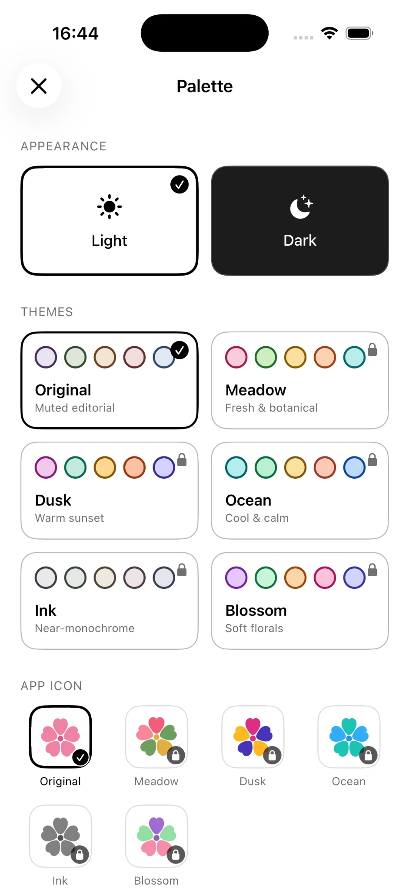
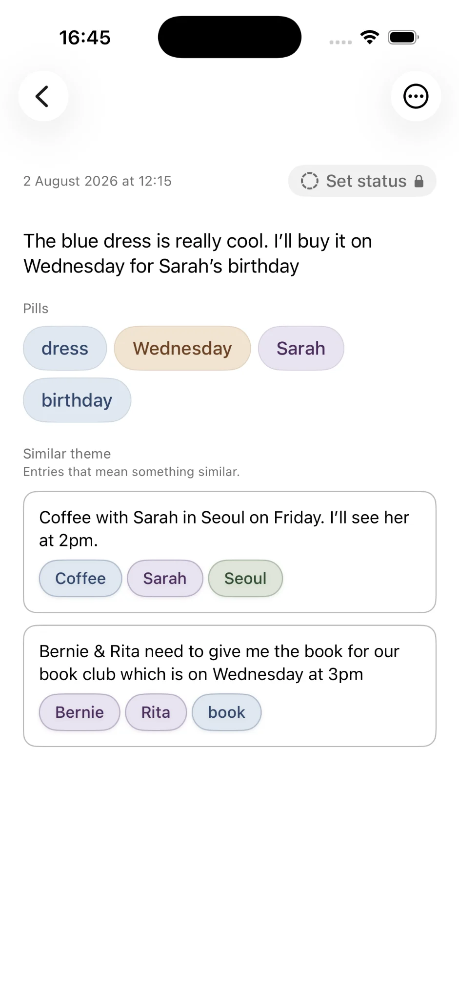
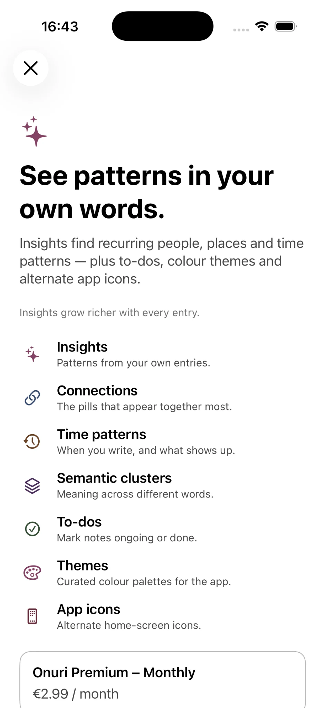

人・場所・日付・時刻・トピックのフィルター
Onuriは書いている間に役立つ文脈を認識し、手動でタグを作らなくてもホーム画面から過去の記録を絞り込めます。
プライベートなノートアプリ · 自動セカンドブレイン
Onuri: Notes & Life Trackerは、書くそばから人、場所、日付、時刻、トピックを自動でつなげるiPhone向けのプライベートなノートアプリです。自然な言葉で検索し、ワンタップで過去の記録をフィルターし、つながった語句をたどって、フォルダや手動のタグ付けなしで関連エントリーを再発見できます。
 パソコンで見ていますか？iPhoneでスキャン
Onuriのしくみを見る
パソコンで見ていますか？iPhoneでスキャン
Onuriのしくみを見る
ノート数無制限 · スマートフィルター · 関連エントリー · ライト＆ダークモード · プライベートなiCloud同期 · 広告・トラッキングなし · iOS 17.6以降
晩春の火曜日
ミナと祇園の近くでコーヒー。話はいつの間にか、あのお寺のことに。京都で見つけたのは2021年の春だった。あの写真を送ってあげなきゃ。
最初のノートを書くところから、つながり、検索、インサイトまでをビジュアルでご紹介します。
Onuriの使用例
書いた内容を人、場所、日付、時刻、トピックでフィルターし、つながった語句をたどり、関連エントリーを開き、新しいテーマやダークモードでOnuriを自分好みにできます。




無料の機能
すべてのノートが探索しやすいつながったコレクションの一部となり、時間がたってもアイデアや思い出、瞬間を再発見できます。
Onuriは書いている間に役立つ文脈を認識し、手動でタグを作らなくてもホーム画面から過去の記録を絞り込めます。
テキストで文章を検索し、認識されたフィルターを組み合わせ、同じノートの周りによく現れるつながった語句をたどれます。
ノートを開くと意味の近いほかのエントリーが表示され、言い回しが違っていても以前の考えが再び浮かび上がります。
落ち着いて集中できる書き心地はそのままに、ライトまたはダークの外観でOnuriを使えます。
ノートや日記のエントリーを無制限に作成でき、下書きの自動保存、プライベートなiCloud同期、TXTまたはCSVでのエクスポートに対応しています。
Premiumでは、拡張されたインサイト、フィルター可能な「進行中」「完了」ステータス、5つの追加テーマ、ライト／ダークのテーマバリエーション、それに合わせた代替アプリアイコンが加わります。
フォルダは不要
手動でタグ付けや整理をする必要はありません。すべての考えを無理にフォルダに押し込む代わりに、Onuriはすでに書いた内容の中に役立つ道筋をつくります。
つながりをたどる
直接検索するか、関連する人、場所、トピックをたどって、覚えているノートが再び見つかるまで探せます。
プライバシーを重視した設計
考えはあなただけのもの。安心して自由に書けます。
Onuri Premium
Premiumでは、勢い、連続記録、繰り返し現れるテーマ、人や場所のパターン、意味によるクラスター、最も強いつながりについての拡張されたインサイトが利用できます。さらに、フィルター可能な「進行中」「完了」ステータス、5つの追加カラーテーマ、ライト／ダークのテーマバリエーション、それに合わせた代替アプリアイコンも加わります。
Onuriを詳しく見る
Onuriについて特によく調べられているポイントを、テーマ別のガイドで解説しています。
開発者より
従来の階層構造やフォルダツリーが、本物のアイデアを書き留める妨げになりうる理由。
フォルダ不要のノートが整理の手間を減らし、普段の文章から役立つつながりを生み出しやすくする理由。
よくある質問
Onuriは、入力するそばから文章中の人、場所、日付、アイデアを自動でつなげるiPhone向けのプライベートなノートアプリです。管理が必要なフォルダや手動のタグはありません。
セカンドブレインとは、アイデアやノート、記憶を保存して取り出すためのデジタルな仕組みです。Onuriは、書くうちに役立つつながりを自動で生み出すという方法でこれを実現します。
はい。無料の機能には、ノートと日記エントリーの無制限作成、テキスト検索、人・場所・日付・時刻・トピックのフィルター、つながった語句、関連エントリー、下書きの自動保存、ライト＆ダークモード、iCloud同期、TXTまたはCSVでのエクスポートが含まれます。Premiumでは、拡張されたインサイト、「進行中」「完了」ステータス、追加テーマ、それに合わせたアプリアイコンが加わります。
OnuriのApp Storeのプライバシー情報では、データは収集されないと記載されています。アプリには広告、分析SDK、トラッキングがなく、Appleデバイス間の同期にはあなた個人のiCloudアカウントを使用します。公開ウェブサイトでは、同意があった場合にのみ任意のGoogle Analyticsを使用します。
Onuriは、デバイス上で動作するプライベートなインテリジェンスを使って、文章中の情報を認識しつなげます。中核となる体験は、ノートをクラウドのAIサービスにアップロードすることに依存していません。
すべてのノートの置き場所を決めさせる代わりに、Onuriは文章全体から人、場所、日付、時刻、アイデアを認識するため、あとから検索したりつながりをたどったりできます。
OnuriはiOS 17.6以降が必要で、iCloudを使ってAppleデバイス間で同期します。
自由に書く
文章を静かにつなげ、その中の人、場所、アイデア、瞬間を再発見しやすくするプライベートなノートアプリ。
Onuriを無料でダウンロードパソコンで見ていますか？iPhoneでスキャン
完全ガイド
ノートアプリ、セカンドブレイン、検索、プライバシー、iCloud、自動のつながりを体系的にまとめた完全ガイドをお読みください。完全ガイドを読む →
自分に合ったノートの取り方がわからない方へ。10種類のノート術を比較して診断クイズに挑戦 →
2026年10月更新